01In a hurry to get started?
- Run the Findee setup. At the end, leave Open Findee ticked. Findee waits in the tray, next to the clock. If you cannot see its icon, look under the ^ arrow with the other hidden tray icons.
- Press Alt+Space. A search box opens in the upper part of your screen.
- Type a few letters of a file, a folder, or an app. The results appear as you type.
- Press Enter to open the first result, or use ↓ and ↑ to pick another one.
That is all. The first time, Findee needs a short while to list the files on your drives. The search box says so while it works, and it can be used as soon as the list is ready. Findee starts with Windows from then on, so it is ready every time you sign in, and one notification says so the first time; to change this, open Settings and untick Start with Windows (see Settings).
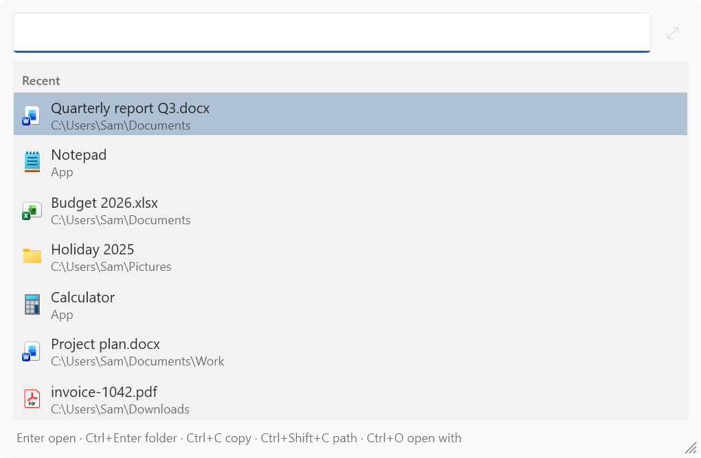
02Findee at a glance
Findee has two parts. The Findee service runs quietly in the background and starts with Windows. It keeps a list of the files and folders on your drives, and it keeps that list up to date as files come and go. The Findee app is the search box and the tray icon you use. The app does the searching itself, over the list the service keeps, so it feels instant.
Findee shows three kinds of result, in three groups:
- Apps
- The programs in your Start menu, including Microsoft Store apps.
- Files and folders
- Everything on your fixed NTFS drives that you can open, found by its name.
- Inside files and emails
- Matches in what is written inside your documents and in your Outlook mail, taken from Windows Search (see Inside files and emails).
Findee has no main window. You use it from the search box, and you change its settings in the Settings window from the tray menu.
Version 1 covers the fixed NTFS drives in your PC. Network drives and drives with other formats, such as exFAT or ReFS, are not searched.
03Opening Findee
The shortcut
Press Alt+Space from anywhere. The search box opens with the cursor ready, so you can type at once. Press the same shortcut again, or Esc, to close it. It also closes when you click on something else. It stays open while Clipee or the Windows clipboard history (Win+V) is in front, so you can pick something to paste into it.
If another program already uses Alt+Space (PowerToys Run does), choose a different shortcut in Settings → General. A shortcut that another Markticulous app already uses is not saved, and Findee says which app uses it.
Size and place
The search box opens showing up to 8 whole results. To make it bigger or smaller, drag the small grip of three lines in its lower-right corner. It can be any width and any height, and Findee remembers the size. The edges do not resize it. While you drag the grip, the grip and the line of keys under the results are hidden.
To move the search box, drag any empty part of it. Findee remembers the place for each monitor, and opens the search box on the monitor where the pointer is.
The Best size button, at the top right beside the search box, puts things back. Click it for the best size and the usual place, centred a quarter of the way down the screen. Right-click it to centre the search box only, keeping its size. It is dimmed while the search box already has its best size and place.
The tray icon
The Findee icon sits in the tray, next to the clock. Left-click it to open the search box. Right-click it to open its menu:
- Restart to update
- Shown only while an update is ready, with an orange dot (see Installing, updating and removing).
- Open Findee
- Opens the search box, like the shortcut.
- Settings…
- Opens the Settings window. In the search box, Ctrl+, does the same.
- ♥ Support Markticulous
- Appears only after Findee has been useful for a while (see Support Markticulous).
- Quit
- Closes the tray icon and the shortcut. The Findee service keeps the list of files up to date, so searching is quick when you start Findee again. Start Findee from the Start menu whenever you want it back. Starting it a second time while it runs simply opens the search box.
While an update is on its way, a small orange dot sits at the top right of the tray icon. It breathes while the update downloads and blinks once it is ready. If you turned off animation effects in Windows, it stays lit instead.
04Searching
Type part of a name. Findee looks at the names of files and folders, and shows matches as you type. It does not mind capital letters.
- Several words find names that contain all of them, in any order. q3 report finds both Quarterly report Q3.docx and Q3 sales report.pdf.
- Quotes keep words together. "meeting notes" finds names that contain exactly that phrase, spaces included.
- Part of a word is enough. calc finds Calculator.
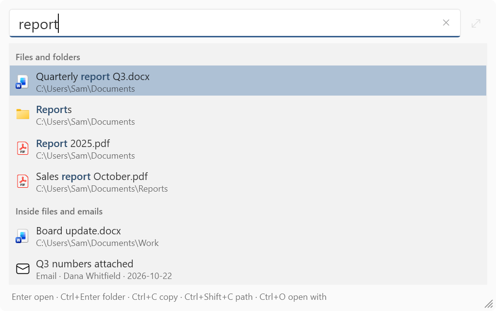
Filters
Add a filter anywhere in what you type to narrow the results. You can use as many as you like together.
| Filter | What it does |
|---|---|
| kind:image | Only one kind of item. The kinds are image, document, audio, video, archive, email, code, folder, and app. For example, kind:document finds PDF, Word, Excel, PowerPoint, text, and similar files. |
| ext:pdf or *.pdf | Only files that end in .pdf. Use it more than once to allow several endings: ext:jpg ext:png. |
| in:projects | Only items whose folder path contains the text, such as C:\Users\Sam\Projects. The text cannot contain a space. |
| modified:week | Only items changed in that time: today, yesterday, week (the last 7 days), month (the last 30 days), year (the last 365 days), a year such as modified:2025, or a month such as modified:2025-10. |
| size:>10mb | Only files bigger (>) or smaller (<) than a size. The units are b, kb, mb, and gb. For example, size:<500kb. |
You can use filters on their own, with no words, as long as one of them is ext:, kind:, or in:. For example, kind:image modified:week lists the pictures from the last week. Something that looks like a filter but is not one Findee knows, such as author:sam, is searched for as an ordinary word.
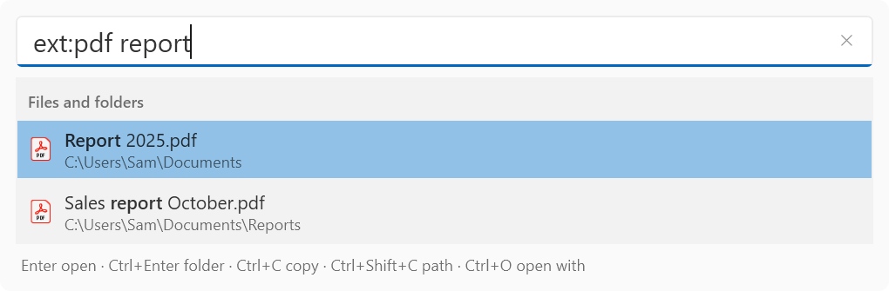
Filters also decide which groups show. kind:app shows only apps, and kind:email shows only emails. Filters that apply only to files and folders (ext:, in:, size:, modified:, and the file kinds) hide the Apps group. Because Windows Search cannot apply them, they also hide the Inside files and emails group, with two exceptions: kind:document and kind:email keep it.
Small typing mistakes
When you type one word of 4 to 12 letters and Findee finds fewer than 5 results, it also tries the word with one letter missing or two neighbouring letters swapped. So reprot finds report. In other words, it puts right a letter typed twice by mistake (reeport) and two letters typed in the wrong order. The extra matches are shown below the better ones.
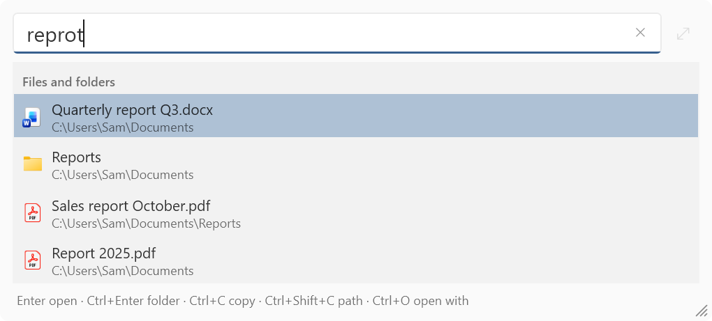
What it does not catch
A wrong letter (rexort) or a missing letter (repot) is not caught. Neither is a mistake in a search with several words, in a word shorter than 4 or longer than 12 letters, or in a search that already finds 5 results or more. The extra search runs only when the first one finds few results, so a correct search is never slowed down by it.
05Results
The groups
Results come in up to three groups, each with a heading. A group with nothing to show is left out.
- Apps (up to 5). An app that matches ranks above a file with the same kind of match.
- Files and folders (the best 50). Each row shows the name, with the matching part in bold, and the folder it is in underneath. Files in dependency and build folders, such as node_modules, site-packages, .git, bin, and obj, are ranked lower, so your own files come first. They can still be found.
- Inside files and emails (up to 20). It appears a moment after the others, below them, without moving your selection.
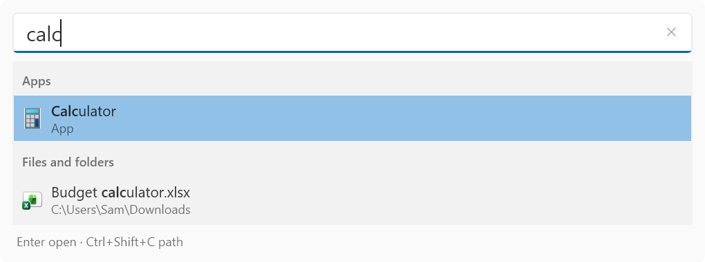
How a result ranks depends on how well its name matches what you typed (a whole name first, then a name that starts with it, then a word in the name that starts with it, then anywhere in the name), on how recently it changed, on how short its name is, and on how often you open it (see How the learning works). The first result is selected after every search, so Enter opens it.
Moving and opening
| Key or click | What it does |
|---|---|
| ↓ and ↑ | Move one result. The group headings are skipped. |
| Page Down and Page Up | Move eight results. |
| Enter or double-click | Open the result. |
| Ctrl+Enter | Open the folder it is in, with the item selected in File Explorer. |
| Right-click, Shift+F10, or the Menu key | Open a menu of what you can do with the result (see Quick actions and preview). |
| Esc | Close the search box. |
Typing always goes to the search box, whichever result is selected. If something you open has gone, the line under its name says, in cyan, This file is no longer there. (or This folder is no longer there.). The row stays where it is, and Findee forgets it.
Under the results, a line of small, softer text lists the keys that work on the selected result (see Quick actions and preview). It changes with the result, since not every action fits every kind of result.
Recent
With nothing typed in the search box, Findee shows your 8 strongest items, with the heading Recent: the files, folders, and apps you open most (see the first picture in this guide). Before you have opened anything, the box says Type to find files, folders, and apps.
06How the learning works
- Each time you open something, it gets a boost in later searches.
- The boost grows with how often you open it, up to a cap, and halves every two weeks you leave it alone.
- Findee remembers up to 2,000 items. When it is full, the least useful one is dropped.
- Something you open often is found even when its name ranks below the first 200 matches.
- With an empty search box, your 8 strongest items show as “Recent”.
The history is kept for your Windows account only, in %LocalAppData%\Findee on your PC. Nothing about it leaves your PC. Anyone else who uses the PC has their own history. To start again, close Findee and delete that folder’s opened.dat file.
07Quick actions and preview
Keys that work on the selected result. They are also listed in a small line under the results, which shows only the ones that fit the result you have selected.
| Key | What it does |
|---|---|
| Enter | Opens the result. |
| Ctrl+Enter | Opens its folder in File Explorer with the item selected. For an app, it opens the folder the program is in (not available for Microsoft Store apps). |
| Ctrl+C | Copies the file, so you can paste it in File Explorer, an email, or a chat. If you have selected some of the text in the search box, Ctrl+C copies that text instead. |
| Ctrl+Shift+C | Copies the full path of the file or folder. |
| Ctrl+O | Opens the Windows Open with list for a file. |
| Ctrl+Shift+Enter | Runs a program as administrator (for apps from the Start menu, and for .exe, .bat, .cmd, and .ps1 files). Windows asks for permission first. |
| Space | Previews the file with Peekee, while Peekee is running (see below). |
| Right-click, Shift+F10, or the Menu key | Opens a small menu with the same actions: Open, Open folder, Copy, Copy path, Open with, Run as administrator, and Preview with Peekee. Those that do not fit the result are greyed. |
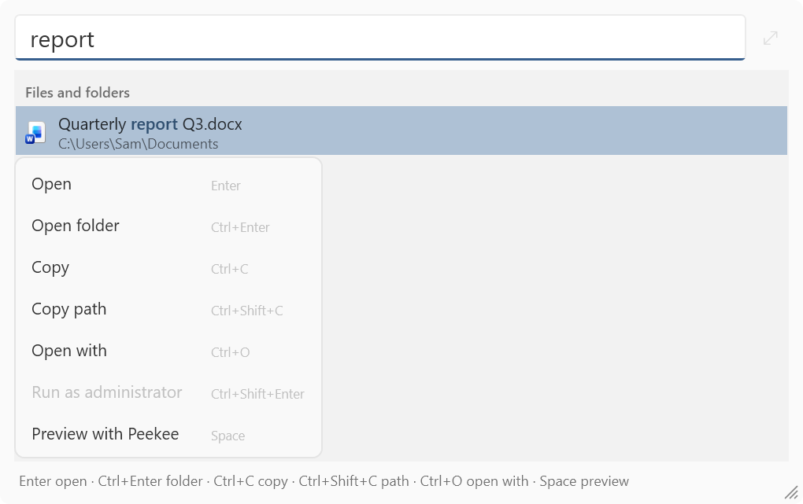
You can also drag a file or folder from the list into File Explorer, onto the desktop, or into another program. A drag always makes a shortcut to the item there. Findee never moves or changes your files. To copy the file itself, press Ctrl+C and paste it. Apps cannot be dragged.
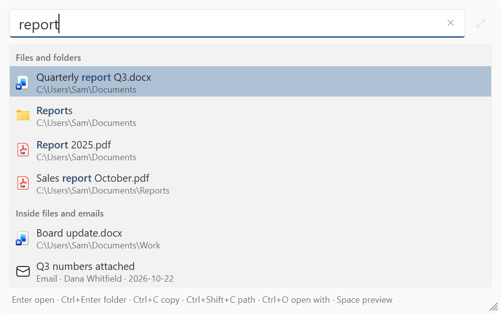
Previewing with Peekee
Peekee is a free Markticulous app that shows a quick look at a file without opening it. Findee uses it for previews while Peekee is running. If Peekee is installed but not running, Space does nothing and Preview with Peekee is greyed in the menu. Start Peekee, and previews work.
Space is also a letter in the search box, so Findee only treats it as “preview” once you have started moving through the results. The rule is simple:
- After you move the selection with ↓, ↑, Page Up, Page Down, or a click, and have not typed since, Space previews the selected file.
- While you are typing, Space types a space, as you would expect. Typing anything puts you back in typing mode.
- For an app, or for an email, Space always types a space.
While the preview shows, Findee keeps the keyboard, so you can go on moving through the results and the preview follows. The search box slides aside, or narrows, to sit beside the preview, and goes back to its place when the preview closes. Press Space again to close the preview.
If Peekee is not installed, Space shows a short line once each time you open the search box: Install Peekee, a free Markticulous app, to preview files with Space. The word Peekee is a link to its page. Until Peekee is running, Space preview is also left out of the key line under the results.
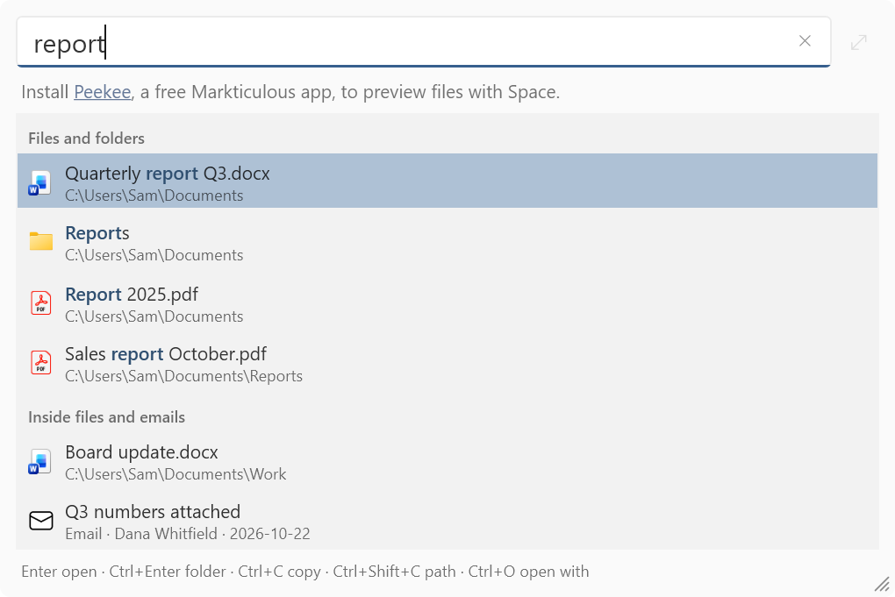
08Inside files and emails
Findee’s own list holds names. To look inside your documents and emails, Findee asks Windows Search, the search that is already part of Windows. It shows the answer in its own group, Inside files and emails, below your files.
- It starts after a short pause. Findee waits a moment (about 150 milliseconds) after your last key, and only for words of at least three letters. The group appears when the answer arrives, below the other groups, without moving your selection. If Windows Search takes longer than two seconds, Findee gives up for that search.
- It only knows what Windows Search knows. Windows Search looks inside the places Windows has been told to index, usually your own folders. A document in a place Windows does not index is found by its name only.
- Findee does not copy any of it. The matches are read from Windows Search as you search, and are forgotten when the search box closes (see Privacy).
- Emails come from classic Outlook only. They show the sender and the date under the subject. Press Enter and the message opens in classic Outlook. New Outlook, the newer app that replaces it, keeps no mail on this PC for Windows Search to read, so its mail is not included.
- Filters limit it. The group shows for plain searches, and for kind:document and kind:email. Other filters hide it (see Searching).
If Windows Search is turned off on your PC, the group is simply missing, and a quiet line says Windows Search is off, so matches inside files are not shown. Everything else carries on working.
09Settings
Open Settings from the tray menu, or with Ctrl+, in the search box. Changes apply at once. There is no Save button. The list on the left also shows Findee with the Markticulous plate and the version at the bottom, on every page. Click the plate to open About.
General
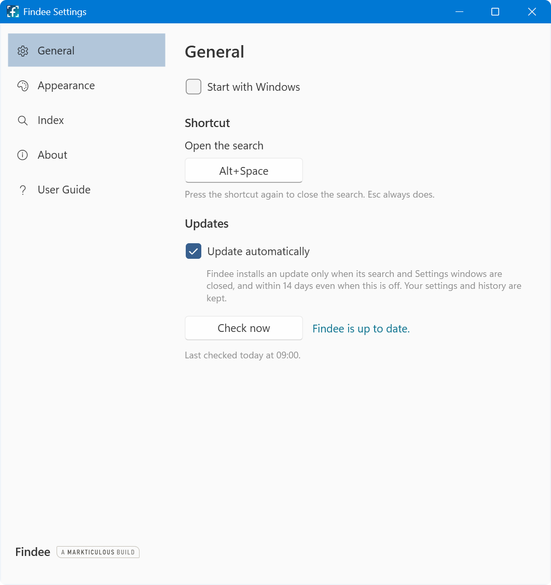
- Start with Windows
- Opens the tray icon when you sign in to Windows, so the shortcut is ready. It is on from the first time Findee starts. The index is kept up to date by the service whether or not Findee is open.
- Shortcut
- The keys that open the search box, under Open the search. Click the box and press the keys you want, for example Ctrl+Alt+F. Esc stops without a change and keeps the old keys. A shortcut needs Ctrl, Alt, Shift, or Win with a letter, a digit, Space, or a function key. The standard shortcut is Alt+Space. Press it again to close the search; Esc always does.
- A message to the right of the box says what happened. ✓ Saved shows in cyan. These show in red, and the old keys stay: ⚠ Use Ctrl, Alt, Shift, or Win with a letter, digit, Space, or F-key; ⚠ Already used by another app (Windows refused the keys); and ⚠ {App} already uses {keys} for {action}. Not saved. when another Markticulous app has those keys. If another Markticulous app takes the same keys later, the page says {App} also uses {keys} for {action}. in amber when you open it, until one of them changes.
- Updates
- The same block in every Markticulous app. See below.
The Updates block
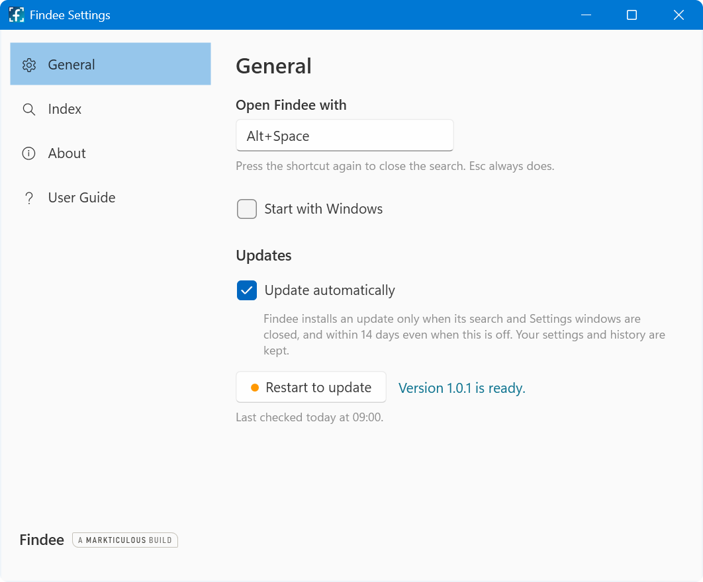
- Update automatically is ticked unless you change it. Findee installs an update only when its search and Settings windows are closed, and within 14 days even when this is off. Your settings and history are kept.
- One button, whose words follow the state: Check now; Checking…; Downloading… with a breathing orange dot; and Restart to update with a blinking dot, which installs the ready update at once. A button that has nothing to do is dimmed.
- Beside the button, the status: Checking for updates…, Downloading {version}…, Version {version} is ready. or Findee is up to date. (in cyan); Update check failed. or The Findee service is not running, so updates are not checked. (in red); or Updates work in the installed app. in a copy of Findee that was not installed with the setup.
- Under it, Last checked says when the last check was made, for example Last checked today at 16:15. It stays hidden until the first check.
Appearance
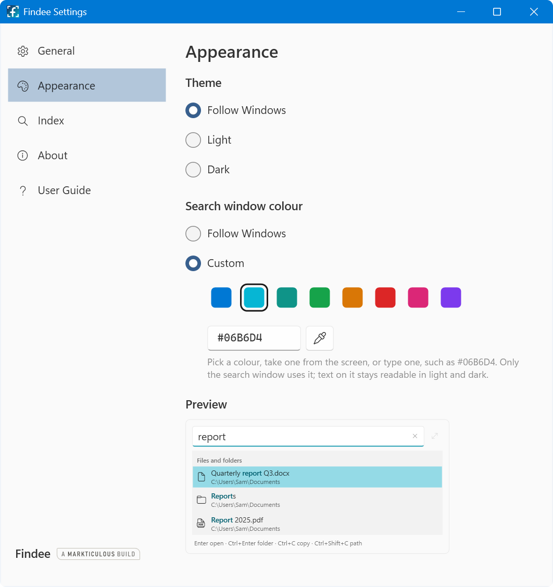
- Theme
- Follow Windows (the standard), Light, or Dark. It applies at once to the search box, Settings, the tray menu, and dialogs, and is remembered. With Follow Windows, Findee changes when Windows changes between light and dark.
- Search window colour
- The colour of the search window only: the line under the search box, the selected result, and the matched letters in result names. Settings, the tray menu, and dialogs always keep the Windows accent colour. Follow Windows (the standard) uses the accent colour set in Windows and changes when you change it there. Custom lets you click one of the eight colours, take a colour from anywhere on the screen with the eyedropper button beside the box, or type any colour as six hex digits, for example #06B6D4; Findee uses it as soon as it is complete. Something that is not a colour is not used, and a red note beside the box says so. With the eyedropper, a magnifier follows the pointer and shows the colour under it; click to take it, or press Esc or right-click to stop without a change. Findee keeps the search window readable: the selected row is made a little lighter or darker where needed so its text reads clearly, and the matched letters take a shade of the colour that reads on the list and on the selected row, in light and dark. The Preview under the colour choice shows a small search window with the colour and the theme you have now, and changes as you pick. The colour you pick is remembered when you go back to Follow Windows.
Index
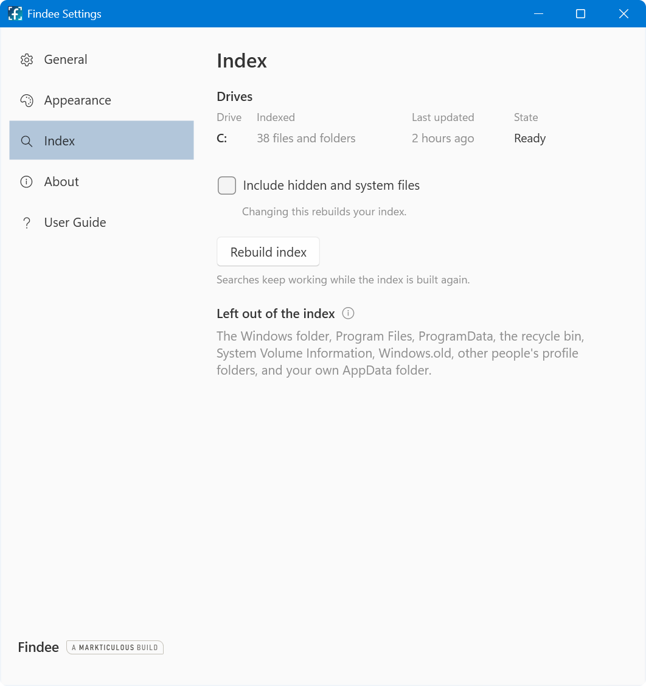
- Drives
- One row for each fixed NTFS drive: its letter, how many files and folders are in the index, when it was last updated (for example just now or 3 minutes ago), and its state: Ready, Building…, or Waiting to retry. If the Findee service is not running, the line The Findee service is not running, so the index is not being updated. takes the place of the rows.
- Include hidden and system files
- Off by default. Turning it on or off rebuilds your index. It applies to your index only.
- Rebuild index
- Makes the list again from scratch. Searches keep working while it is built. The button is dimmed while a build is already under way, and when the service is not running.
- Left out of the index
- The folders Findee never lists: the Windows folder, Program Files, ProgramData, the recycle bin, System Volume Information, Windows.old, other people’s profile folders, and your own AppData folder. They hold system files, installed programs, and other people’s data, and leaving them out keeps the index small and the results about your own files. The ⓘ beside the heading says the same.
About
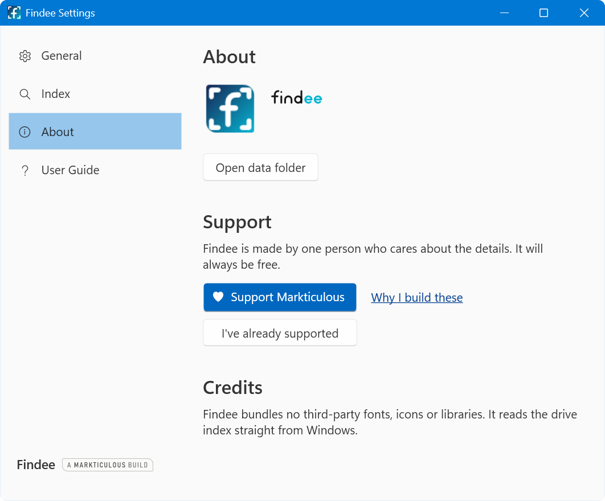
The Findee name drawn as a wordmark beside the app icon, with the version. Releases on GitHub opens the list of Findee versions and their release notes in your web browser. Open data folder opens %LocalAppData%\Findee, where your settings and your history are kept. Below are Support (see Support Markticulous) and Credits: Findee bundles no third-party fonts, icons, or libraries.
User Guide
The last entry in the list opens this guide in your web browser.
10Privacy: what Findee can see
Findee collects nothing about you. It has no telemetry, no ads, and no account. Everything it knows stays on your PC.
What the index holds
For every file and folder, the index holds four things: its name, the folder it is in, its size, and the date it was last changed. It never holds what is inside a file: no text, no pictures, no mail.
One index for each person
The Findee service builds a separate index for each Windows account that uses Findee on the PC. Yours lives under %ProgramData%\Findee\users, in a folder named after your account, and only your account and Windows itself can read it. Another person on the same PC cannot see yours, and you cannot see theirs.
Only what you can open
Your index holds only the names you could see in File Explorer. While it builds your index, the service leaves out every folder you are not allowed to open, together with everything inside that folder. A private folder of another person, or a folder whose permissions keep you out, never reaches your index at all. Findee also checks a result again before it shows it, as a second check, so a folder that was closed to you after the index was built does not show either.
What Findee keeps in your account
Your history of what you open (see How the learning works) and your settings are in %LocalAppData%\Findee, up to 2,000 items. They hold the name of each item, its full path, how many times you opened it, and when. They are never shared.
The one exception is the supporter check. When it finds your email, Findee also writes a small shared file, %LocalAppData%\Markticulous\supporter.json, that holds only that you are a supporter, the date of the check, and the supporter mark you chose (never your email), so that the other Markticulous apps on your PC can thank you without asking again. Uninstalling Findee leaves this file, because the other apps use it.
Windows Search
The Inside files and emails group is answered by Windows Search at the moment you search. Findee does not store those answers. Windows Search follows its own rules about who may see what, and Findee shows you only what it gives back to you.
What goes over the network
- The update check. Once a day, the Findee service asks GitHub whether a newer Findee is available. It sends nothing about you or your files.
- The supporter check, only if you choose it (see Support Markticulous).
- Links you click, such as the one to Peekee, open in your web browser.
Nothing else leaves your PC.
Taking it all away
Uninstalling Findee removes the index and the service, and your history and settings (see Installing, updating and removing).
11Installing, updating and removing
Installing
- Download Findee-Setup-1.0.0.exe from the Findee page. The number is the version, so yours may be different.
- Double-click it. If Windows shows “Windows protected your PC”, click More info, then Run anyway. This appears because Findee is new and not yet signed with a publisher certificate.
- If double-clicking does nothing, Windows has blocked the downloaded file. Right-click it → Properties, tick Unblock at the bottom of the General tab, click OK, then double-click it again.
- Accept the terms on the one page that follows and click Install. Windows asks for an administrator’s permission once. Choose Yes.
- At the end, leave Open Findee ticked to start it.
Findee installs for everyone on the PC, in Program Files\Findee, together with the Findee service (named Findee Index in the Windows Services list) that keeps your index up to date even when nobody is signed in. If the .NET 10 Desktop Runtime is not on the PC yet, the setup downloads it from Microsoft first; if it is, nothing extra is fetched. You will find Findee in the Start menu. There is no desktop shortcut.
Updating
The service checks for a new version once a day, and also when you press Check now in Settings → General → Updates. An update is checked against a signature before anything is installed, so a damaged or tampered file is refused. Then:
- With Update automatically on, the update installs by itself once Findee is not in use: the search box and Settings are closed, and the search box has not been opened for a couple of minutes. Findee closes, the update installs, and Findee opens again.
- With it off, the update waits for you. Press Restart to update in Settings, or choose Restart to update in the tray menu, whenever you are ready. An update still installs by itself within 14 days even when this is off, and only when Findee is not in use, so nobody stays on an old version for ever.
Your settings, your history, and your index are kept. You see the orange dot on the tray icon while an update is on its way (see Opening Findee).
Removing Findee
Open Windows Settings → Apps → Installed apps, find Findee, and choose Uninstall. Uninstalling:
- closes Findee, then removes the program, the Findee service, and the Start menu shortcut;
- removes %ProgramData%\Findee, with every index. They are a copy of your file list, and Findee makes them again if you reinstall;
- for the account that uninstalls, removes the Start with Windows entry, Findee’s place in the shared shortcut list of the Markticulous apps, and %LocalAppData%\Findee (history and settings).
It does not remove files of other accounts. Another person’s history and settings stay in their own %LocalAppData%\Findee folder after you uninstall, because Windows lets only that person remove them. They are small, and they can delete the folder by hand. The .NET runtime stays, since other programs may use it.
12Why Findee is fast
- It reads the file list straight from NTFS. The service reads the drive’s own table of every file instead of walking through the folders one by one, so the first list of a whole drive is quick to make.
- Afterwards it only follows the changes. Windows keeps a journal of every file that is created, renamed, or deleted. The service reads just that, so it stays up to date without scanning again.
- The search runs inside the app. There is no trip to the service for each letter you type. The app maps the list into memory and scans all the names at once on several processor cores.
- Typing more narrows what is already found. When you add a letter to what you typed, Findee looks only through the earlier matches.
- Folder paths are built only for the rows you can see.
- It is small and quiet at rest. The search window is built when you open it and its memory is given back when it closes. While you are not searching, Findee uses almost no processor time and little memory.
Measured on one PC, with the finished release:
| What | Measured |
|---|---|
| Search box on screen after the shortcut, first time | 89 ms (limit 100 ms) |
| Search box on screen after the shortcut, later times | 19 ms (limit 50 ms) |
| One search over a million names | 0.8 ms; the slowest of nine test searches 4.6 ms (limit 15 ms) |
| Memory at rest (app and service) | App 58.7 MB, service 9.2 MB (limit 80 MB each) |
| Processor time at rest | App 0.5 ms, service 0.1 ms in each quiet minute (limit 10 ms) |
| Size on disk | 3.8 MB for the app and the service; the setup download is 3.1 MB |
| The first index of a drive | C: in 4.7 seconds (3.4 million file records); all four drives in 8.1 seconds |
Test PC and date: AMD Ryzen 9 5950X, Windows 11, 21 November 2026.
13Support Markticulous
Findee is made by one person who cares about the details. It will always be free. It has no ads and no tracking. If it saves you time, you can help keep it going with a coffee on Ko-fi.
You will always find the support button under Settings → About, next to a link that explains why these apps are made.
Findee may ask for support once in a while. The first time comes after you have opened 250 results from Findee, and then again at each further 250. It never asks in the first two weeks, and never more than once in 90 days. The card has three buttons: Support, Later, and Don’t ask again. If you choose Don’t ask again, that is final: Findee never asks again, and the tray item goes away. After the first 250, an item ♥ Support Markticulous also appears in the tray menu.
If you have supported Markticulous, click I’ve already supported on the About page. You can then choose a small thank-you picture, called an adornment, that is shown beside the version number. Until then, no adornment shows. Findee can also check your support: it asks for the email you used on Ko-fi, and sends only a scrambled version of that email (a hash) to Markticulous to check it, and only when you click Check. Nothing else is sent. When the check passes, the other Markticulous apps on your PC know it too, so they do not ask again. If you would rather not, click Skip the check: Findee takes your word for it, in Findee only.
14If something goes wrong
- The shortcut does nothing
- Look for the Findee icon in the tray (under the ^ arrow too). If it is not there, start Findee from the Start menu. If it is there, another program may be using the same shortcut. Open Settings → General and choose another one under Shortcut. If Windows refused the shortcut when Findee started, a notice says so, for example Alt+Space is in use by another app. Open Findee from its tray icon for now. The tray icon always opens the search box with a left-click.
- “Findee is building its index. Results will appear in a moment.”
- The service is making the list of your files, which happens after the first install, after Rebuild index, and when you turn Include hidden and system files on or off. Wait a moment: a large drive takes a little longer. Settings → Index shows the state of each drive.
- “The index is not being updated.” or “The Findee service is not running, so the index is not being updated.”
- The first line shows in the search box, the second on the Index page of Settings. The service that keeps the list of files is not running. Searches use the list as it was, so new files are missing. Restart the PC, or open the Windows Services list and start the service named Findee Index (its short name is FindeeService). Nothing in Findee itself needs repairing.
- A file you know exists is not shown
- It may be new: the list follows changes within moments, but if the service was not running, it catches up when it starts. It may be in a folder Findee leaves out (see Settings → Index), a hidden or system file (turn on Include hidden and system files), on a drive that is not a fixed NTFS drive, or in a folder you are not allowed to open. Only the best 50 results are listed, so add a word or a filter (see Searching). If nothing helps, press Rebuild index.
- “No matches.”
- Nothing in your index has all of your words in its name. Check the spelling (a misspelt word with one missing or swapped letter is caught, a wrong letter is not) and try fewer words.
- Space does not preview
- Space previews only after you have moved through the results with the arrow keys, the Page keys, or a click, and have not typed since. For an app or an email it never previews. If Peekee is not installed, Findee says so (see Quick actions and preview).
- “This file is no longer there.” or “This folder is no longer there.”
- Shown in cyan under the name of the result you opened. The item was moved or deleted after the list was made. Findee forgets it from Recent. The list catches up with the change shortly.
- “Windows Search is off, so matches inside files are not shown.”
- The Windows Search service is not running on this PC. Start the service named Windows Search in the Windows Services list. Matches inside files come only from folders Windows indexes (see Inside files and emails).
- My emails do not show
- Only classic Outlook mail is found, and only when Windows Search indexes it. Mail in the new Outlook is not included.
- “Update check failed.”
- The service could not reach GitHub, usually because the PC is offline. It tries again by itself, a little later each time, and you can press Check now when you are back online.
- “The update could not be verified, so it was not installed.” or “The update did not install. Findee kept the version it has.”
- Findee refused a damaged update, or the installer could not finish. Your current Findee keeps working as it was. The next check tries again. If it keeps happening, download the newest setup from the Findee page and run it over your copy: your settings and history are kept.
- Looking for more detail
- Go to Settings → About and click Open data folder. It opens %LocalAppData%\Findee. The service writes what it is doing to %ProgramData%\Findee\logs\service.log, which only administrators can open.
- Asking for help
- Write to Markticulous through the support page and say which version of Findee you have (it is shown at the bottom of the Settings list) and what you were doing.